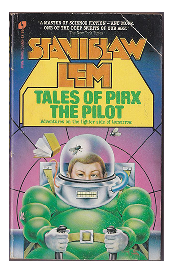
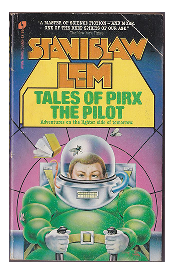

Stanislaw Lem

Stanislaw Lem
 

Selected Science Fiction Bibliography
- Novels
- The Astronauts (1951)
- The Magellan Nebula (1955)
- Time Saved (1955)
- The Investigation (1959)
- Solaris (1961)
- The Invincible (1964)
- Memoirs Found in a Bathtub (1973)
- The Futurological Congress (1974)
- The Chain of Chance (1975)
- The Star Diaries (1976)
aka Memoirs of a Space Traveler - Tales of Pirx the Pilot (1979)
- Return from the Stars (1980)
- The Hospital of the Transfiguration (1982)
- His Master's Voice (1983)
- Imaginary Magnitude (1984)
- Peace on Earth (1987)
- Fiasco (1987)
- Eden (1989)
- Highcastle (1995)
- Collections
- The Cyberiad (1974)
- Mortal Engines (1977)
- A Perfect Vacuum (1979)
- The Cosmic Carnival of Stanislaw Lem (1981)
- More Tales of Pirx the Pilot (1982)
- One Human Minute (1986)
- The Stanislaw Lem Reader (1997)
biography
With the possible exception of France's Jules Verne, Polish author Stanislaw Lem (1921–2006) has been the best-known science fiction writer to work in a language other than English. His books have been translated into more than 40 languages, with total sales estimated at some 27 million copies by 2006.
Lem's highly philosophical novels were quite different in style and content from the largely adventure-oriented science fiction popular in the West, most of which he mercilessly disparaged; the Science Fiction Writers' Association in the United States revoked his honorary membership in a celebrated 1976 incident. His writing, often grim but leavened by dry humor, was shaped by influences specific to the time and place in which he lived. Yet Lem's popularity was truly international. At the height of the Cold War he commanded a large readership in both the United States and the Soviet Union, and his single best-known work, the 1961 novel Solaris , was filmed by both countries. His work was generally readable and entertaining, and he told Peter Swirski, in an interview published in A Stanislaw Lem Reader , "I am a staunch adherent to the maxim that literature, much as philosophy, should never bore its readers to death."
Stanislaw Lem was born in the Polish city of Lvov (now Lviv, Ukraine) on September 12, 1921. His family was of Jewish background, although Lem himself was never religiously observant. One theme that marked his writing wasthat of the arbitrariness of life. Lem himself wrote in his memoir Highcastle that "I really don't know when it was that I first experienced the surprise that I existed, surprise accompanied by a touch of fear that I could just as easily have not existed, or been a stick, or a dandelion, or a goat's leg, or a snail." Perhaps that attitude was rooted in Lem's own experiences and those of his family as they lived through the terrible upheavals of Europe in the twentieth century. Before Lem was born, his father was nearly executed by a firing squad (he was saved by the last-minute intervention of a friend), and Lem himself had brushes with death during World War II.
In 1946, with Lvov having been absorbed into the Soviet Union, he moved to Krakow, Poland, which remained his home for much of the rest of his life. Lem worked slowly toward a medical degree at the Jagiellonian University in Krakow, but his family had lost all of its property during the war, and he was essentially penniless. To make ends meet he began to write pulp fiction for magazines and poetry for a Catholic weekly newspaper.
Iskry (Eden, 1959) was one of Lem's first fully characteristic novels, built on the science fiction convention of a spaceship crew discovering a remote and mysterious planet, but emerging in the end as skeptical about the possibility of human communication with cultures whose technology might differ fundamentally from that found on earth. Two years later Lem published Solaris , which remains his best-known work. Solaris , again, was outwardly a science fiction adventure: the inhabitants of a space station encounter a mostly water-covered planet whose ocean seems to have intelligent properties. As the crew tries to communicate with this radically different life form and then attacks it in frustration, a bewildering disaster occurs: the ocean creates physical manifestations of their deepest fears. Solaris was filmed by Soviet director Andrei Tarkovsky in 1972, and an American version directed by Steven Soderbergh was filmed in 2002, with actor George Clooney in the lead role.
Other Lem novels and stories also featured space explorers as protagonists, although Lem often introduced a note of satire and a psychological edge that left the reader quite distant from triumphant Star Trek territory in the end. His writings featured two recurring characters. The adventures of astronaut Ijon Tichy (who appeared in Dzienniki Gwiazdowe (Star Diaries and Memoirs of a Space Traveler, 1971) commented either directly or indirectly on the militarism and bureaucracy of Earth's own societies. Nathan M. Powers wrote on the Modern Word website that "Tichy lives in a universe teeming with life, where humanity jostles shoulders with creatures bizarre and grotesque, yet somehow always familiar, for this is a world where humanity's flaws and virtues are writ large across the stars. These stories may be read as sharp social satire, depicting the bizarre customs of other places to drive home surprising points about our own; they have been aptly compared to the philosophical fictions of Swift and Voltaire."
Pirx the Pilot, who appeared in a series of Lem's short stories, was an ordinary man living in a world that science had made bizarre. Lem in the Pirx stories, unlike other science fiction authors, accurately described the dullness as well as the psychological challenges that would face an interplanetary traveler, and his writings generally extrapolated from firm groundings in scientific fact. One of the Ijon Tichy novels, Pokoj na ziemi (Peace on Earth, 1987) fused satirical themes with up-to-the minute science: Earth has temporarily rid itself of war by setting machines loose on the Moon to fight battles in which no humans are hurt, but soon the Earth is threatened with invasion from its own now-malevolent lunar machines. Tichy is sent to the moon to investigate, but he is subjected to a procedure in which the right hemisphere of his brain is disconnected from the left, leaving him unable to speak.
Many of Lem's writings pushed the imagination of the reader to its limits in the worlds they conjured, and he wrote some works that fell into the experimental category even as they retained a strain of humor. Cyberiada (The Cyberiad, 1965) features traveling robots as its central characters; humans are present only as minor characters who are disliked by the robots for their mushy consistency. Bezsennosc (1971, translated as The Futurological Congress ) depicts an Earth transformed by the introduction of mind-altering drugs into the atmosphere; the hero, Tichy, cannot separate reality from a texture of interlocking mass hallucinations.